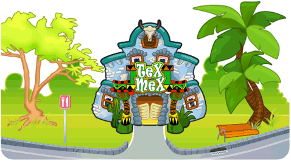

13 |
Restaurante mexicano |
 |

Para el que le guste las emociones fuertes, la comida mexicana es la ideal. En este restaurante, tu objetivo será el de cocinar exquisitos y picantes burritos. Para ello, pon la torta de maíz en el plato central. Esta será la base sobre la que luego añadirás el relleno.
Utiliza la sartén para freír los tacos de carne. Una vez hechos, con cuidado para que no se quemen, añádelos a la torta de maíz.
Por otro lado tendrás que preparar la salsa. Vierte el tomate, los frijoles y el pimiento en la cazuela y espera que se caliente. Cuando la salsa este en su punto seleccionala pulsando el Botón A y añádela a la torta. Ya solo queda enrollarlo y servirlo.
El secreto para preparar un buen burrito está en añadir la cantidad justa de chili. Los clientes pueden pedirte su burrito sin picante, con poco picante, muy picante o extremadamente picante. Para añadir chili al burrito viértelo sobre una cazuela tantas veces como te pida el cliente. Todos los burritos que prepares a partir de ese momento usando la salsa de esa cazuela serán picantes.
La salsa de la cazuela nunca se agota. Si necesitas dejar libre alguna de las cazuelas para preparar otro tipo de salsa pulsa el Botón A con la mano vacía sobre la cazuela como si fueras a servir su contenido y a continuación agita el mando. |
 |
 |
 |